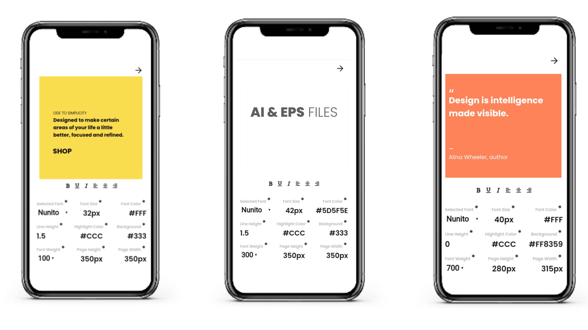
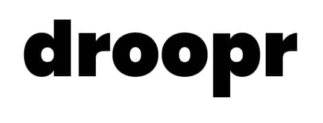

Simple online editor, to create typo-elements.
Create typography elements for presentations, ads, banners and social media posts, try it for free.
Start Creating
Made with ❤️ and ☕ in
India
Follow us on
Twitter
BETA